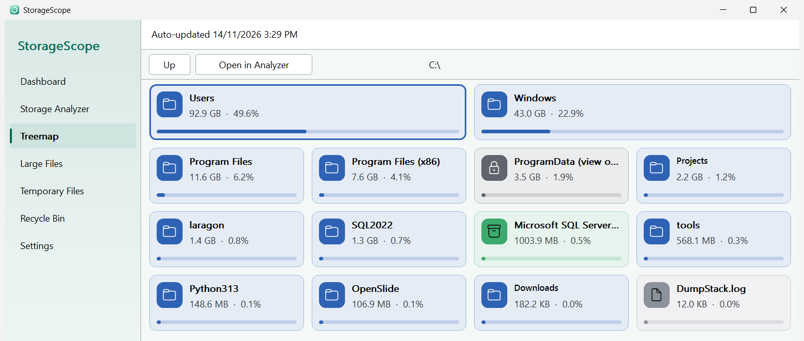
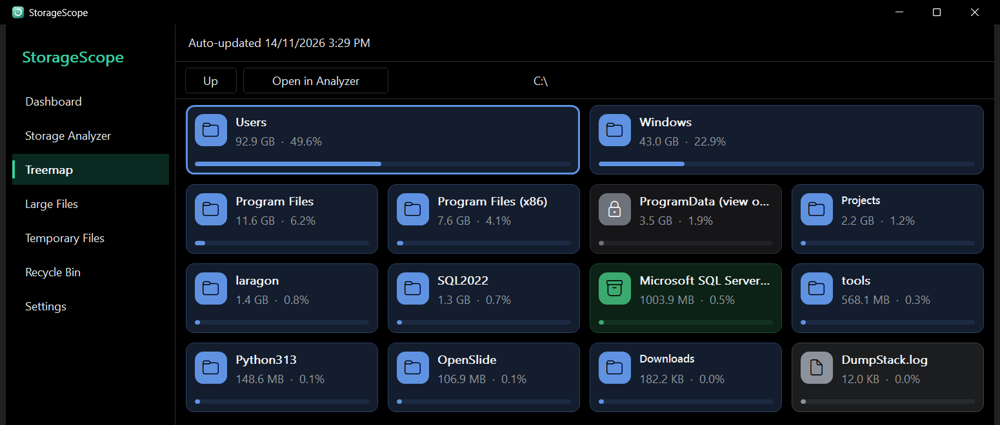
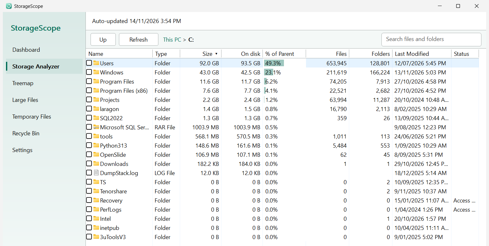
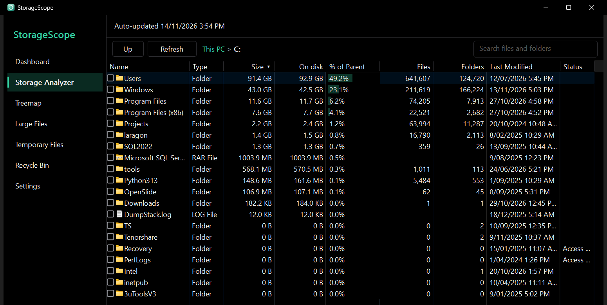
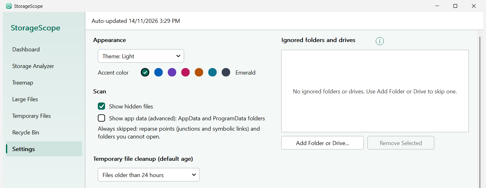
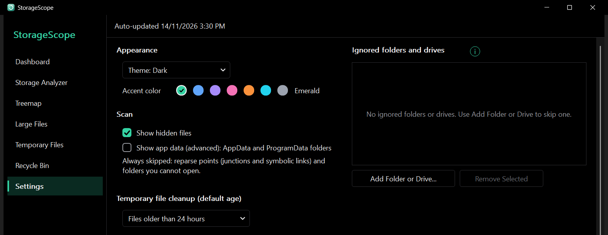

Storage Analyzer
A sortable folder tree with size, size on disk, share of parent, file and folder counts, and last modified. Click a column header to sort.
Free and open source for Windows
A small, private disk analyzer for Windows. No installer, no telemetry.


Latest release
Features
Five views, one small exe. Scan once, then explore it the way that suits the question.
The main feature
Most disk tools draw a wall of nested rectangles. StorageScope shows each folder as a card: the biggest items first, a bar for its share of the parent, and one color per drive and file type.
A sortable folder tree with size, size on disk, share of parent, file and folder counts, and last modified. Click a column header to sort.
Filter by minimum size, file type, and age to find the few files that take most of your space. Open the location or remove them from the same page.
Scan your temp folder and clean files older than 24 hours, 7 days, or 30 days. You see the recoverable space before anything is removed.
List, restore, or permanently delete what is in the Recycle Bin.
Used and free space for every drive, plus how much it changed over the last days, and usage by file type.
Results are there when you open the app and update as files change, so you rarely need to rescan. You can switch this off in Settings.
Near-black text in light mode, a pure-black dark theme, follow Windows, and seven accent colors.
Native C++ with no runtime or framework. Scans with several worker threads and stays light on memory.




A cleaner is only useful if you can trust it. These are defaults, not options you have to find.
Windows, Program Files, and other critical folders can't be deleted from the app.
"Move to Recycle Bin" is the main action. Permanent deletion is separate and asks for a second confirmation.
AppData and ProgramData are hidden from lists unless you turn them on in Settings, and always counted in sizes.
No administrator rights and no services. It never asks for elevation.
No network access and no telemetry. The saved scan stays on your PC in your local app data folder and can be cleared in Settings.
MIT licensed with the build done in public by GitHub Actions. Check the SHA-256 against the published value.
New and unsigned apps trigger SmartScreen. Releases are not code-signed yet (signing is in progress). Click More info, then Run anyway, or right-click the file, open Properties, and tick Unblock. You can compare the file with the published SHA-256: certutil -hashfile StorageScope.exe SHA256.
No. Nothing is removed until you select items and confirm. Moving to the Recycle Bin is the default, and permanent deletion needs a second confirmation.
No. It makes no network connections. Settings, history, and the optional saved scan live in %LOCALAPPDATA%\StorageScope.
Delete the exe. To remove its saved data too, delete the StorageScope folder in %LOCALAPPDATA%.
Windows 10 and 11, 64-bit.
Free, portable, and under 1 MB.